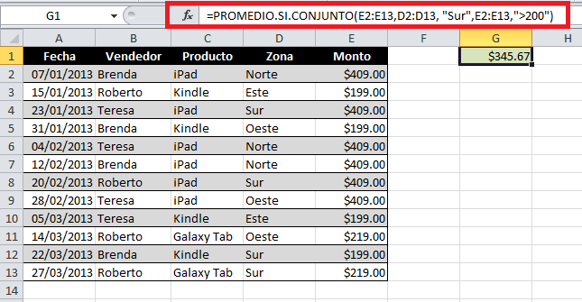
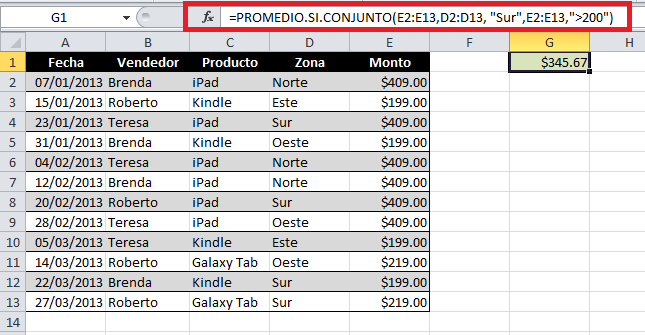

La funcion CONTAR. SI. CONJUNTO en Excel nos permite contar los elementos de un rango que cumplen con los criterios definidos.
la variacion de .SI.CONJUNTO existe para multiples funciones y basicamente es para poder aplicar esta funcion en varios conjuntos
 

Ejemplo: